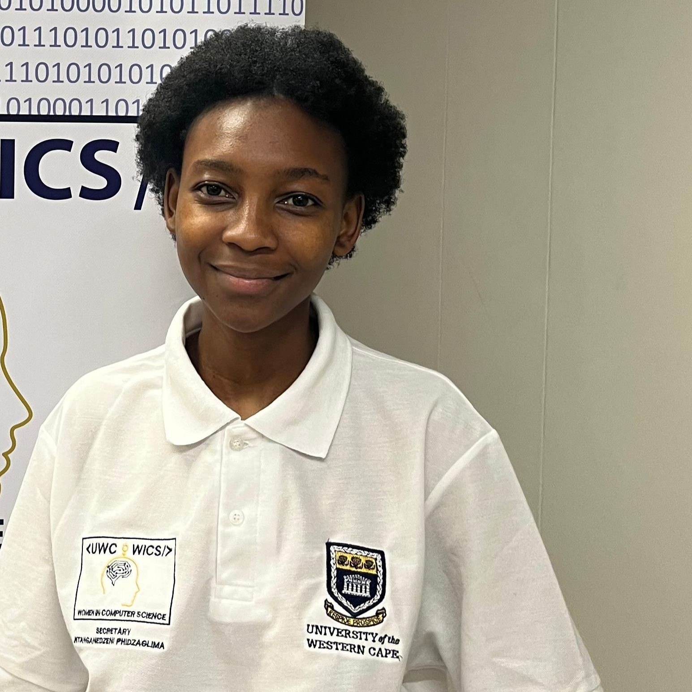

My Leadership Journey in Tech Communities

My leadership journey reflects my ability to inspire and create impact. I have served as Secretary and Vice President of the UWC IT Society, Chairperson of Geekulcha Student Society, and a leader in Women in Computer Science. These roles strengthened my communication, project management, and teamwork skills while mentoring and motivating others.
Leadership for me wasn’t just about titles; it was about contributing to something bigger than myself. I stepped into roles that challenged me to grow, support my peers, and build tech spaces that were inclusive, collaborative, and empowering.

Chairperson, Geekulcha Student Society - UWC 2025
I was honored to establish the UWC Chapter of Geekulcha, driving tech innovation forward.
- Led the official launch and setup of the UWC Chapter
- Collaborated with Geekulcha HQ and UWC to align activities with national innovation goals
- Ran workshops, talks, and outreach programs focused on tech innovation
.jpg)
Vice President, UWC IT Society 2024
- Oversaw major tech events and hackathons in collaboration with local partners
- Mentored new society members and expanded community outreach
- Contributed to shaping the society’s vision and strategy for the year

Secretary, UWC Women In Computer Science 2023
- Assisted in planning and organizing society events and workshops
- Maintained internal communication and records
- Helped build the society’s digital presence and documentation